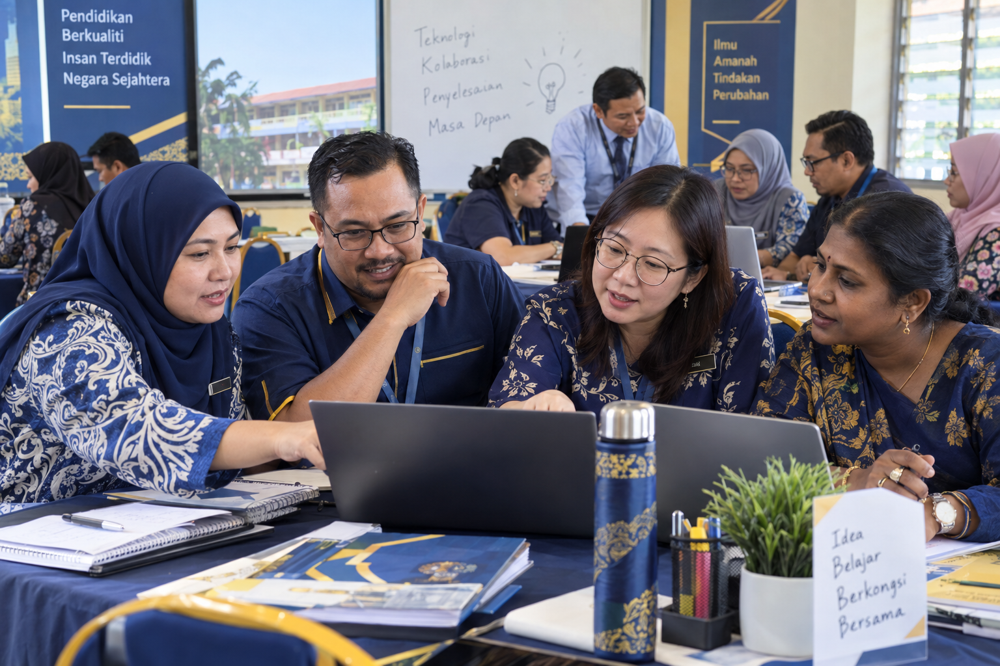
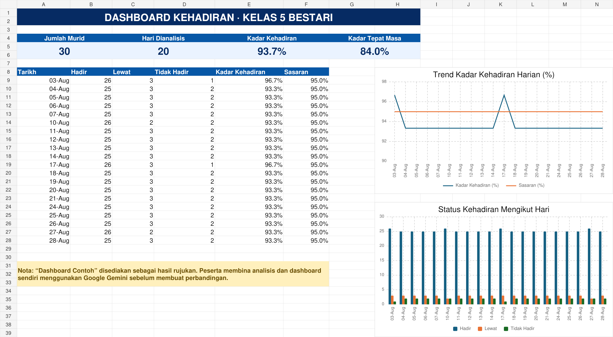

Lembaran Watak dan Storyboard Pentadbir Sekolah
Bina profil watak Guru Besar atau Penolong Kanan, lembaran rujukan dan storyboard tiga babak untuk video 10 saat.
Buka latihan lengkap →Semua aktiviti tambahan dihimpunkan dalam satu halaman supaya mudah dicapai semasa kursus dan boleh diteruskan secara kendiri selepas kursus.

Latihan langkah demi langkah menggunakan watak pentadbir sekolah.
Bina profil watak Guru Besar atau Penolong Kanan, lembaran rujukan dan storyboard tiga babak untuk video 10 saat.
Buka latihan lengkap →
Tukar data rekaan kepada data yang disahkan, infografik, poster dan dashboard HTML.
Buka latihan lengkap →
Hasilkan video makluman 10 saat daripada brief, skrip, storyboard dan tiga syot pendek.
Buka latihan lengkap →Latihan menyediakan bahan rasmi yang boleh disemak dan disesuaikan.
Sediakan surat rasmi, laporan, kertas kerja dan minit mesyuarat melalui aktiviti amali.
Buka latihan →Bangunkan skrip solo atau dua pengacara, pantun dan susunan majlis yang sesuai.
Buka latihan →Akses latihan, prompt dan semua sumber pentadbiran melalui halaman koleksi.
Buka koleksi →Latihan membina pembentangan dan bahan visual yang jelas serta profesional.
Ikuti aliran kerja daripada penentuan tujuan hingga semakan pembentangan akhir.
Buka latihan →Hasilkan poster, infografik SOP, visual data, video pendek dan templat slaid.
Buka latihan →Akses latihan, panduan visual dan prompt multimedia melalui halaman koleksi.
Buka koleksi →Gunakan sumber ini bersama latihan di atas untuk memperkemas hasil.
Rujukan warna, fon, susun atur dan nada visual.
Buka panduan → PromptPrompt untuk dokumen, komunikasi, program, analisis dan ucapan.
Buka prompt → PromptPrompt untuk infografik, poster, kelas, program dan komuniti.
Buka prompt →